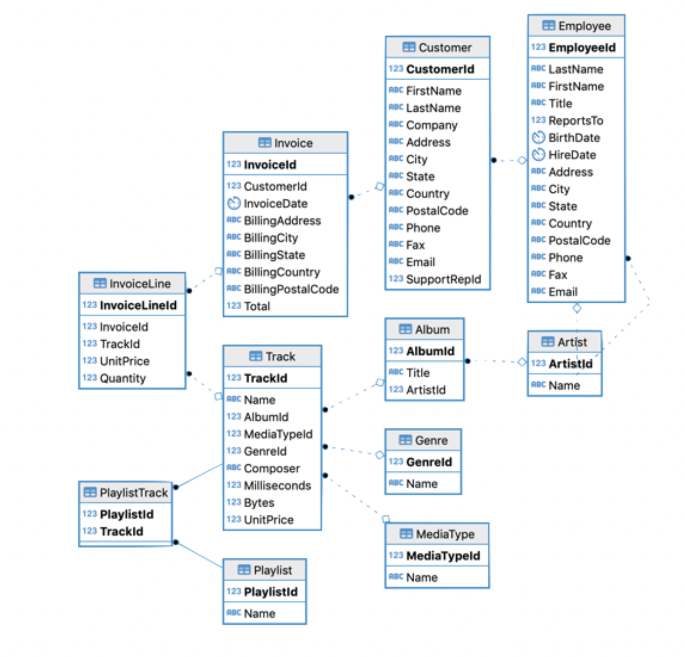

PSTAT 10 Data Science Principles
Lecture 15: Aliasing and Logicals
![]()
September 1, 2026
Introduction
🔁 Review: Lecture 14
👈 Last lecture we looked at:
- Relational databases
- Data structure
- Data integrity
- Data manipulation
- Database connections
- Basic SQL queries
👀 Outline: Lecture 15
👇 Today we will emphasize querying and modifying data:
- Complex data selections
- SQL functions
- SQL syntax and convention
Chinook Database
🕸️ Relation Network
We will continue working with the Chinook database with structure:

Each arrow represents a foreign-key relationship — it shows how a column in one table references the primary key of another, letting us connect data across tables.
🔌 Connecting
Last time we learned how to connect to an external database. Make sure you have the appropriate libraries loaded.
Then create an appropriate database object:
📌 Things to watch out for:
If you do not have an appropriate file path pointing to the
.sqlitefile, R will populate an empty database object.If you wish to avoid working with file paths, place the
.sqlitefile in your current working directory.
📝 SQL Query Structure
Recall our basic SQL query from last lecture that had the following structure:
We also saw the INSERT and LIMIT arguments in these SQL queries.
🔍 Specialized Selection
Suppose we wanted to select all attributes of the invoice table.
‼️ This is going to be a hefty query — but we know how to write it!
⭐ Selecting All Attributes
📋 Too Many Attributes
Written out in full we have:
InvoiceId CustomerId InvoiceDate BillingAddress BillingCity
1 1 2 2009-01-01 00:00:00 Theodor-Heuss-Straße 34 Stuttgart
2 2 4 2009-01-02 00:00:00 Ullevålsveien 14 Oslo
BillingState BillingCountry BillingPostalCode Total
1 <NA> Germany 70174 1.98
2 <NA> Norway 0171 3.96* Syntax
Instead, to select all attributes we can use the * symbol:
InvoiceId CustomerId InvoiceDate BillingAddress BillingCity
1 1 2 2009-01-01 00:00:00 Theodor-Heuss-Straße 34 Stuttgart
2 2 4 2009-01-02 00:00:00 Ullevålsveien 14 Oslo
BillingState BillingCountry BillingPostalCode Total
1 <NA> Germany 70174 1.98
2 <NA> Norway 0171 3.96📌 When in doubt, keep your queries simple! 👍
🔗 Combining SQL and R
Using select()
Sometimes it may be helpful to combine functionality across different languages:
- Load
tidyverseif you have not already done so; and - Load
sqldfif you have not already done so.
'data.frame': 412 obs. of 3 variables:
$ InvoiceId : int 1 2 3 4 5 6 7 8 9 10 ...
$ BillingCity: chr "Stuttgart" "Oslo" "Brussels" "Edmonton" ...
$ Total : num 1.98 3.96 5.94 8.91 13.86 ...Remember, dbGetQuery() returns the query result as a dataframe:
- Here we piped the
select()function to select columns. - Then we used the structure
str()function to examine our results.
🔍 Querying Data
We have used WHERE before…
The syntax WHERE allows us to work with logicals. Make sure to think carefully about the logic you are trying to implement.
🔀 Logicals in SQL
The syntax AND and OR allow us to select intersections and unions respectively:
BillingCity BillingCountry Total
1 Budapest Hungary 21.86🔀 Combining Logicals
Combine clauses similarly to combining R logical expressions.
BillingCity BillingCountry Total
1 Rome Italy 1.98
2 Rome Italy 3.96
3 Budapest Hungary 21.86
4 Rome Italy 5.94- This query returns all invoices with a total greater than 20, or all invoices from Italy where the billing city is Rome.
- Notice the order of operations —
ANDis evaluated beforeOR.
- Notice the order of operations —
BillingCity BillingCountry Total
1 Rome Italy 1.98
2 Rome Italy 3.96
3 Rome Italy 5.94
4 Rome Italy 0.99
5 Rome Italy 1.98
6 Rome Italy 13.86- With the parentheses, the query returns all invoices from Rome where the total is greater than 20 or the billing country is Italy.
🚫 Exclusion
Sometimes we wish to exclude specific values. Suppose we wanted all invoices where the total is NOT .99:
This NOT syntax is very powerful when combined with the AND, OR commands.
🗣️ Logical Syntax
SQL tries to closely mimic human language:
AND,OR,NOTused rather than&,|,!- The
NOT(negated clause) operator breaks (English) language convention slightly. SQL also allows the<>operator to mean not equal:
📌 The syntax != does work in SQLite but not universally. Please use the <> convention whenever possible.
💪 Exercise — Involved Queries
04:00
Write and execute a SQL query that retrieves the InvoiceId, InvoiceDate, BillingCity, BillingState and Total for all invoices of customers based in the United States who spent between $15 and $20.
✅ Solution — Involved Queries
InvoiceId InvoiceDate BillingCity BillingState Total
1 103 2010-03-21 00:00:00 Chicago IL 15.86
2 201 2011-05-29 00:00:00 Madison WI 18.86This query works, i.e. it returns the desired values — but:
- We want to make queries as simple as possible.
- Use available functionality —
BETWEENis helpful.
✅ Better Solution — Involved Queries
A better solution uses BETWEEN:
InvoiceId InvoiceDate BillingCity BillingState Total
1 103 2010-03-21 00:00:00 Chicago IL 15.86
2 201 2011-05-29 00:00:00 Madison WI 18.86Why is this better?
BETWEENis inclusive of both bounds — equivalent to>= 15 AND <= 20.- It replaces two comparisons with a single clause.
- It reads almost exactly like the prompt: “between
$15and$20”.
🔎 Table Exploration
It is often useful to know which attribute values exist in a table.
SELECT DISTINCTallows us to pick only unique values.
🔎 Distinct Combinations
- Combining attribute values looks for distinct combinations.
🔢 Counting and Ordering
Counting Unique Values
Sometimes we wish to know the number of unique values using the syntax COUNT:
COUNT can also be used independently of DISTINCT:
🔃 Ordering Values
Suppose we want to see the invoice totals ordered from minimum to maximum. We can use the ORDER BY query.
🔃 Descending Order, Minimum and Maximum
Sorting in Descending Order
To sort in descending order we would write:
📉 MIN() and MAX() Functions
The MIN() and MAX() functions isolate the smallest and largest values:
BillingCountry BillingCity MIN(Total)
1 Germany Frankfurt 0.99📌 Note the behavior in the case of ties.
💪 Exercise — Multifaceted Queries
05:00
Write and execute an SQL query that:
- Pulls the
TrackId,Name,AlbumId,GenreIdattributes ofTrack. - Only returns tracks between 200 and 300 seconds (200000 and 300000 milliseconds) long.
- Only returns tracks between 2000000 and 5000000 bytes.
- Returns tracks in descending order by price.
- Prints no more than 5 rows to the console.
✅ Solution — Multifaceted Queries
TrackId Name AlbumId GenreId
1 3 Fast As a Shark 3 1
2 4 Restless and Wild 3 1
3 93 Exploder 10 1
4 94 Hypnotize 10 1
5 1146 Welcome to the Jungle 90 1Breaking it down:
- Two
BETWEENfilters joined withAND— one on duration (Milliseconds), one on size (Bytes). ORDER BY UnitPrice DESCreturns tracks in descending order by price.LIMIT 5caps the output at five rows.
🐛 Bug or Feature
Error messages are good. Odd returns are much worse!
- Errors direct you to a specific problem.
- Errors are google-able and often immediately fixable.
What’s happening here?
📌 This is not an error: - SELECT 'ucsb' returns the string literal 'ucsb' for every matched row. - SELECT can return more than just column values.
⭐ Understanding SELECT
SELECT is an incredibly flexible tool!
Name AlbumId
1 Fast As a Shark 3
2 Restless and Wild 3
3 Princess of the Dawn 3 'ucsb' Name AlbumId
1 ucsb Fast As a Shark 3
2 ucsb Restless and Wild 3
3 ucsb Princess of the Dawn 3SELECT can also return computed values:
'ucsb' power(2, 5) Name
1 ucsb 32 Fast As a Shark
2 ucsb 32 Restless and Wild
3 ucsb 32 Princess of the Dawn Bytes / Milliseconds Name
1 17 Fast As a Shark
2 17 Restless and Wild
3 16 Princess of the Dawn🏷️ Aliasing
Aliasing assigns a temporary name to a column (or table) that exists for the duration of the query only.
- Aliasing does not change column names; they exist for the query only.
- A table can also be aliased with the
FROM table AS aliassyntax. - Query-defined columns can also be aliased.
WHEREclauses can reference columns by alias.
🔍 Pattern Selection
Sometimes we don’t know quite what we’re looking for.
- Real-world data is often messy.
- Searching for exact matches often misses things.
- Pattern matching lets us search for partial or approximate values.
SQLite gives us two pattern-matching operators:
LIKE— simple wildcards (%,_), case-insensitive.GLOB— Unix-style wildcards (*,?), case-sensitive.
📌 Reach for LIKE first — it is simpler and covers most cases. Use GLOB when you need case sensitivity or finer control.
🔍 LIKE
First Letter Selection
Selection based on first letter only:
🔍 LIKE — Intermediate Strings
Selection based on intermediate string:
🔍 GLOB Precision
SQLite’s GLOB operator matches text values against a pattern using wildcards — * for any sequence of characters and ? for a single character.
GLOB allows further precision and refinement in these queries:
💪 Exercise — Combining Techniques
05:00
Write and execute an SQL query that:
- Retrieves the
TrackIdandNameof all tracks withAlbumId = 30. - Also retrieves the length of the song in seconds (ms/1000) in a column called
Seconds. - Also retrieves the size of the song in megabytes (\(1\text{MB} = 10^{-6}\) bytes) in a column called
MB. - Lists the tracks in ascending order by length (seconds).
- Only includes songs containing the word
andin their names.
✅ Solution — Combining Techniques
Breaking it down:
- We compute new columns inside
SELECTwith arithmetic and alias them —Milliseconds/1000 AS SecondsandBytes*power(10, -6) AS MB. LIKE '% and %'uses surrounding spaces to match the word “and”, not substrings like “land”.ORDER BY Seconds ASCsorts by the alias we just defined.
🎨 Styling SQL
Much like R, SQL code works without proper styling.
- It can be extremely tough to read.
- SQL is designed for readability — don’t squander it!
Indentation should follow logical functions:
📌 Specific indentation is subjective, but your focus should be to make your code as readable as possible.
Summary
✅ Topics Covered
🤔 This lecture covered many aspects of SQL code and syntax:
- Logical operations with
WHERE - Functionality associated with
SELECT - Aliasing
- Various other functions / operators (
LIMIT,ORDER BY,*, etc.)
📌 In general you shouldn’t focus on memorizing syntax — instead focus on understanding it and using it to solve problems.
📅 Next Class
🤩 Next class we will almost entirely focus on two topics:
- Aggregation (continuing from
COUNT,MIN,MAX, etc.) - Joins
Then, in lectures 17 and 18, we will cover a selection of more advanced SQL topics:
- Nested
SELECTstatements - Table creation and data insertion
- Database design